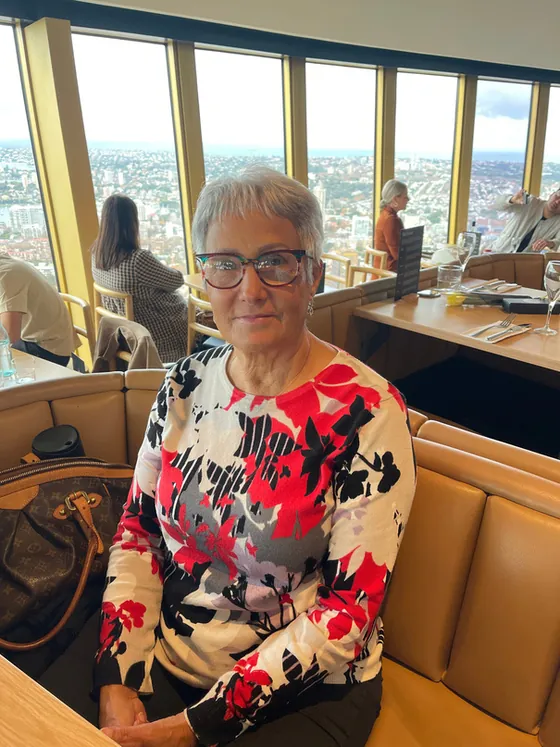

Sample memory. A favourite moment goes here, in the writer’s own words: a shared laugh, a long lunch, a phone call that came exactly when it was needed.
A Life Beautifully Lived
Born in the village of Siġġiewi, Malta, into a family of thirteen children, Antonia’s life was a remarkable journey of courage, resilience and love. She arrived in Australia at just nine years old, with little more than hope for a better future, and grew into a fiercely determined woman who never shied away from life’s challenges.
She worked tirelessly to give her children, Lisa and Stephen, the childhood she had always wanted for them: family gatherings, holidays, laughter and opportunities. She treasured her family, her lifelong friendships and the special bond she shared with her twin sister. Becoming a grandmother to Sofia and Isaac brought her immeasurable happiness.
With her wonderful sense of humour, generous heart and unmistakable strength, Antonia had a way of making those around her feel loved and cared for. Her greatest legacy is the love she gave, the lives she enriched, and the family who will carry her spirit forward.

No matter how difficult life became, she always found a way to make things happen.